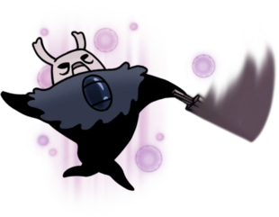

Zote
Zote es encontrado en el Sendero Verde. El Caballero tendrá la opción de salvarlo o dejarlo.
Si es salvado, se presentará y alardeará de sus supuestas hazañas.
Más adelante se convierte en jefe de la Prueba del Guerrero en el Coliseo.
